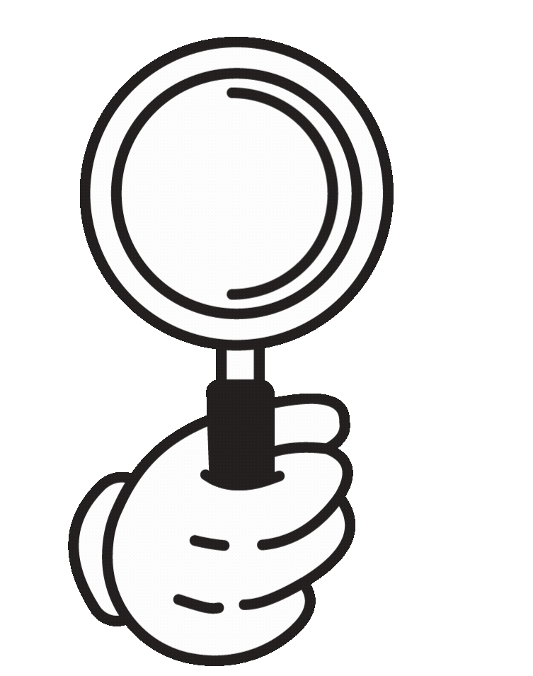

Uma ferramenta óptica de aumento usada para observar objetos pequenos com mais detalhes. Geralmente possui uma lente convexa e é utilizada em diversas áreas, como ciência, medicina e joalheria.
O pesquisador examinava minuciosamente a amostra sob a lupa, observando cada detalhe e anotando suas observações em busca de descobertas importantes.